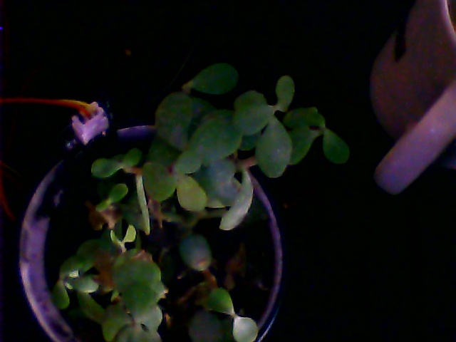

🌿 GardenBot
v2.0
Sync Status
Ambient Temperature
--°C
Indoor Desk Sensor
Soil State
--
Trend:
Stable
Transpiration VPD
-- kPa
Loading range...
Jade Health Status
--
Unknown
Optical Feed
Real-time Jade plant visual analysis

Lens: BME-Camera Node 1
Time: --
Warden Report Summary
Waiting for agent diagnostic logs...
Environmental Trends
Historical biome metrics logs
Soil Moisture (Analog Log)
Vapor Pressure Deficit (kPa)
Intervention Ledger
Human actions logged via Slack interface